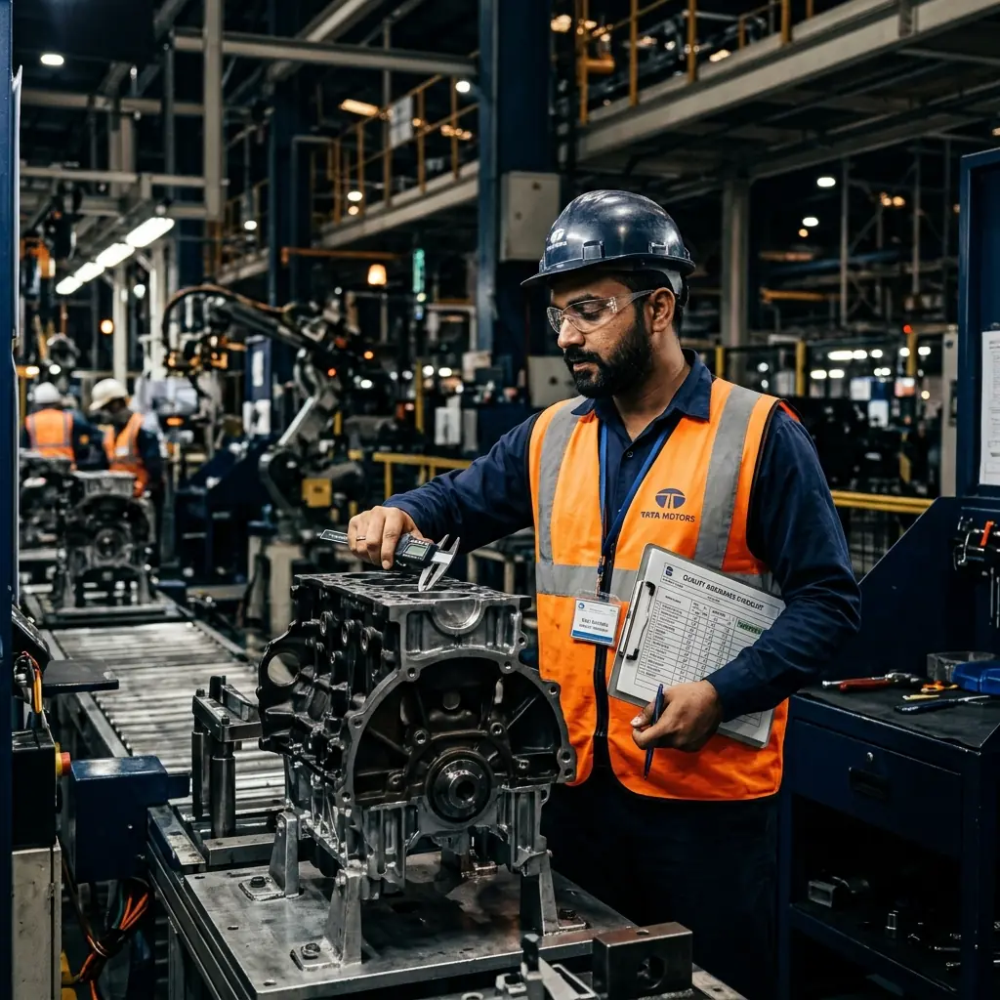
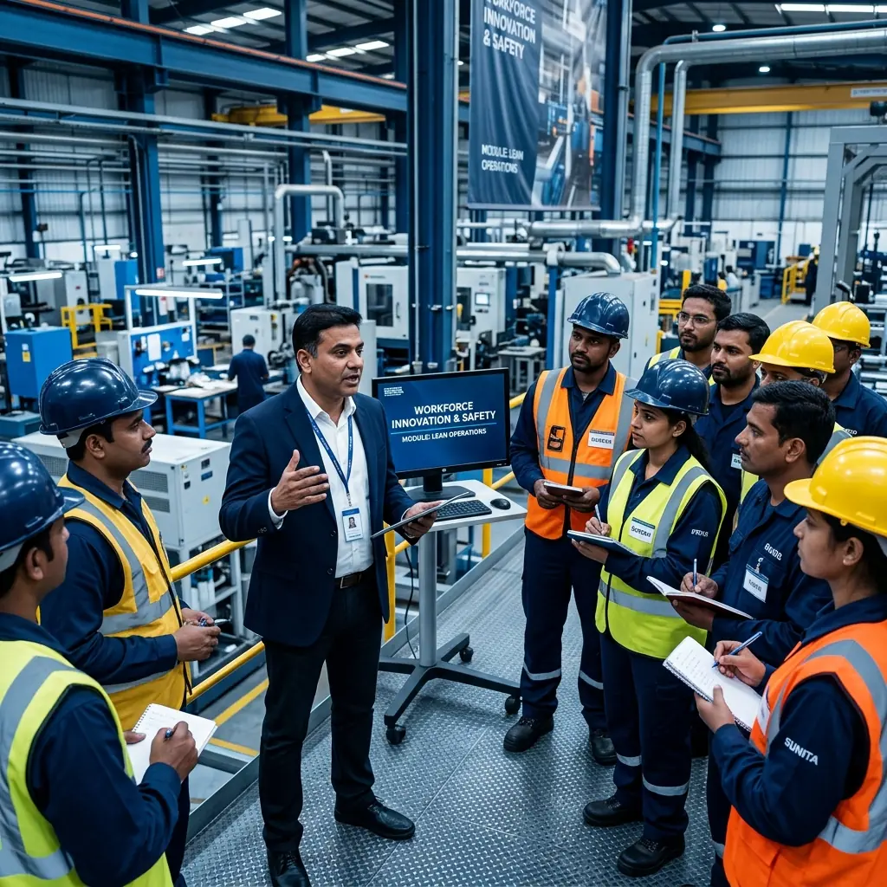
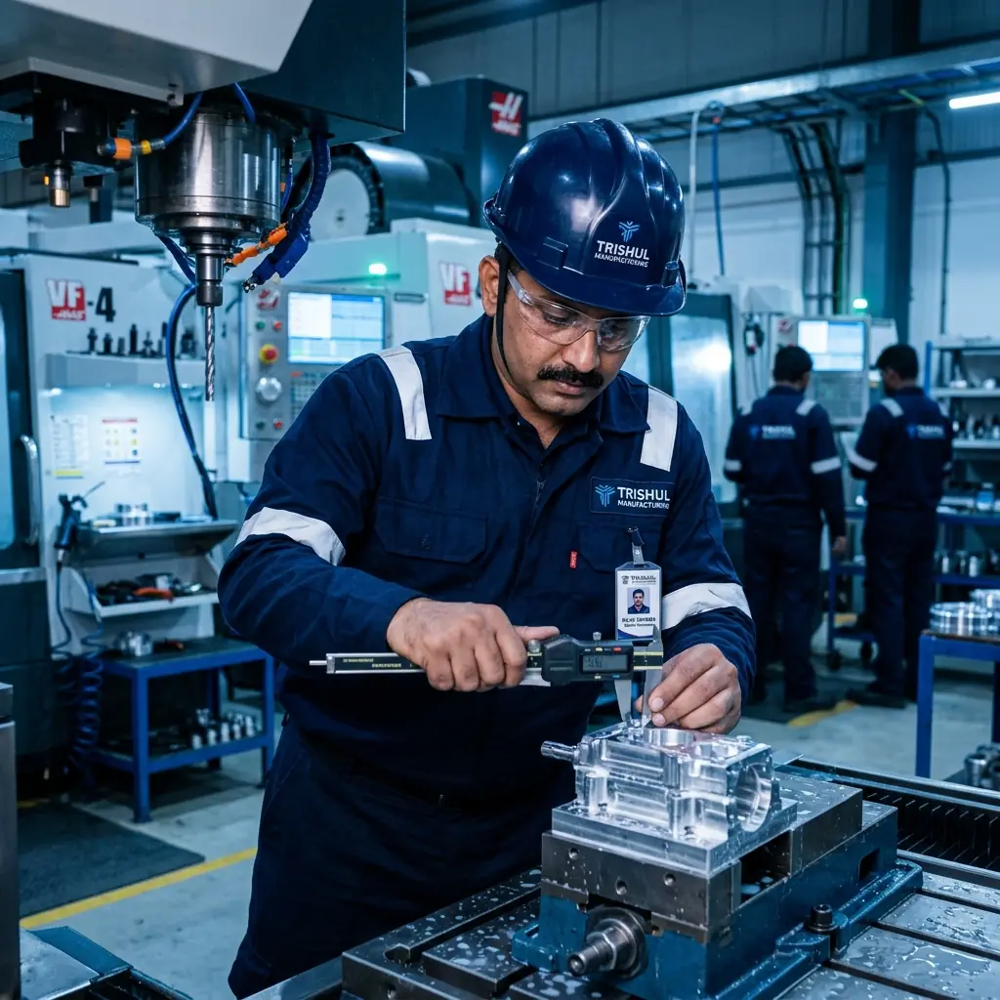

01
Automotive Quality Management
IATF 16949
Support automotive manufacturers and suppliers in strengthening quality management practices, process controls, customer-specific requirements and automotive Core Tools.
Supporting automotive manufacturers and suppliers in meeting stringent quality requirements, strengthening process controls and improving supplier performance.


Supporting automotive organizations in strengthening quality management practices, improving process controls and preparing for applicable IATF 16949 requirements.
At Mars Sigma Solutions, we help organizations understand, implement, strengthen and sustain management systems aligned with applicable international standards and industry-specific requirements.
Our approach goes beyond documentation and certification readiness to focus on practical implementation, operational effectiveness and continual improvement.
Our consulting engagements are structured around the requirements of internationally recognised management system standards, adapted to the organisation's operations, industry and certification objectives.
Support automotive manufacturers and suppliers in strengthening quality management practices, process controls, customer-specific requirements and automotive Core Tools.
Support process audit preparation, supplier process evaluations and improvement activities based on automotive industry requirements.
APQP | PPAP | FMEA | MSA | SPC

With approximately three decades of professional experience in quality management, management-system auditing, industrial consulting and operational improvement, Mr. Subramanian Srinivasan brings a practical, business-focused perspective to organizational excellence.
His professional expertise spans management-system implementation, quality auditing, automotive quality requirements, Lean Manufacturing, Six Sigma and continuous improvement.
Strengthen your supply chain by developing supplier capabilities, improving process controls and addressing recurring quality issues.
Develop competent professionals and high-performing teams through practical, industry-focused technical and management-system training.
Keep your management systems effective, updated and audit-ready through structured, ongoing professional support.
Our approach combines systematic assessment, technical expertise, collaborative implementation and continuous improvement to deliver solutions that work in practice, not just on paper.
We engage with your leadership and operational teams to understand your objectives, existing processes, customer requirements and key challenges.
Through structured assessments, process reviews and relevant audits, we identify compliance gaps, operational risks and opportunities for improvement.
We create practical action plans, management-system frameworks and improvement strategies aligned with your business needs, resources and priorities.
We work alongside your teams to implement agreed improvements, strengthen processes, develop competencies and embed effective management practices.
We evaluate the implementation through relevant audits, performance reviews, process verification and corrective-action follow-up.
We support organizations in maintaining effective systems through periodic reviews, internal audits, performance monitoring and continual improvement initiatives.
Our experienced professionals work closely with your organization to understand your requirements and develop practical solutions that improve performance and create sustainable value.
Or write to info@marssigma.com